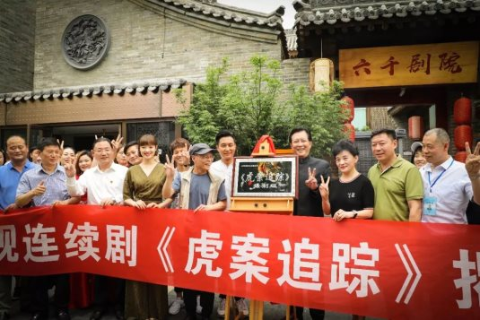
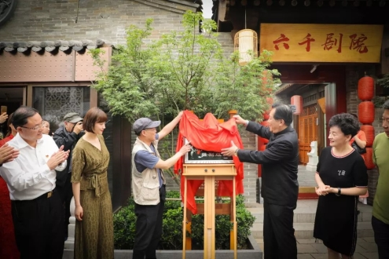
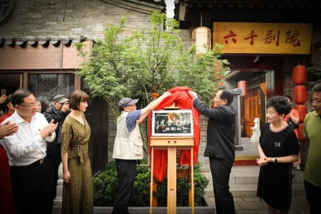
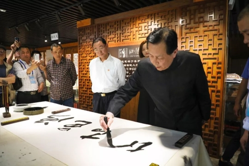
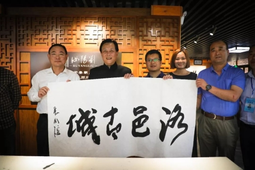

唐国强亲临助阵，大型刑侦连续剧《虎案追踪》在洛邑古城揭幕开机
洛邑古城 2018年5月26日

5月26日，大型刑侦连续剧《虎案追踪》开机仪式在洛邑古城隆重举行，中国著名影视演员、导演唐国强亲临助阵，为仪式揭幕。中共老城区委书记杨劭春、老城区副区长齐成喜出席了本次开机仪式。

《虎案追踪》是我市首部经省公安厅批准立项、国家广电总局备案公示的大型刑侦连续剧，由著名影视人凡子编剧、执导，共30集。本剧以上世纪八九十年代发生在洛阳的真实案例为蓝本，讲述了洛阳市公安与境外文物大盗“魁哥”为首的犯罪分子斗智斗勇的精彩故事。曾经轰动一时的王城公园老虎被杀案、龙门东山北魏立佛被盗案、唐恭陵被盗案等都将在剧中得以重现。

据悉，编剧凡子早在上世纪70年代就曾在洛阳市公安局工作，并亲身参与过剧中老虎案的侦查工作。本剧剧本创作完成后，曾有多家影视公司提出购买版权，实施移地移名，在外地取景拍摄，均被凡子婉言谢绝。《虎案追踪》剧组坚持在洛阳本地完成取景拍摄，洛邑古城也将成为取景地之一。编剧凡子希望通过本土的实景拍摄，还原最具真实性、最具魅力的洛阳公安的英雄风采。
在洛邑古城，唐国强老师及《虎案追踪》剧组还在工作人员的引导下参观了园区，了解中国特色文化，体验传统非遗项目，感受中国传统文化魅力。

途经汝阳刘笔业，唐国强老师铺纸展砚泼墨挥毫，书写“洛邑古城”四个苍劲大字赠与园区，并对洛邑古城寄予厚望。

唐国强老师表示，我们就是要像这样坚定文化自信，充分依托自身深厚文化底蕴，深挖中国历史文化内涵，精雕细琢，以强烈的历史责任感投入创作，打造好洛邑古城这座弘扬中华优秀文化的影视之城。